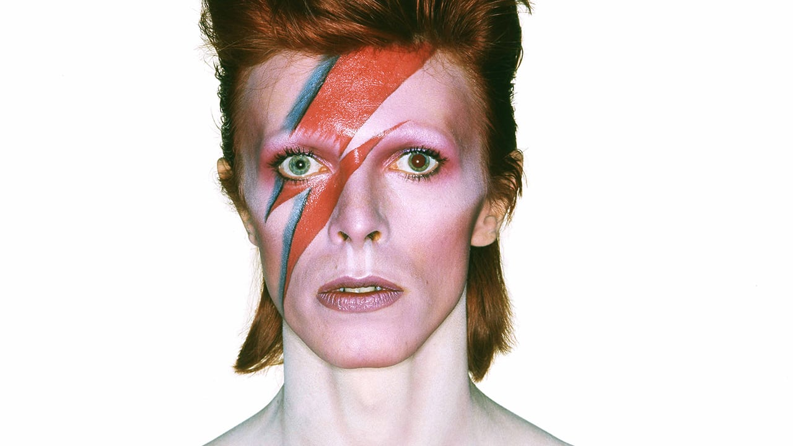

David Bowie

David Bowie as his famous persona: Ziggy Stardust.
His Life
David Robert Jones (8 January 1947 – 10 January 2016), known professionally as David Bowie, was an English singer, songwriter and actor. He was a leading figure in the music industry and is considered one of the most influential musicians of the 20th century, acclaimed by critics and musicians, particularly for his innovative work during the 1970s.
Discography
- David Bowie (1967)
- The Man Who Sold the World (1970)
- Hunky Dory (1971)
- The Rise and Fall of Ziggy Stardust and the Spiders from Mars (1972)
- Aladdin Sane (1973)
- Diamond Dogs (1974)
- Low (1977)
- Heathen (2002)
- Blackstar (2016)